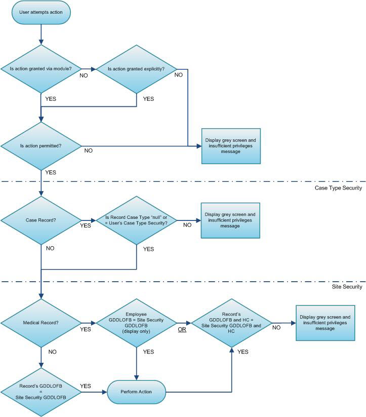

All security within Cority is controlled by the application. At the time of installation, you should set up security according to the standard practices and specific requirements of your users and your organization.
Cority provides two basic levels of security, Role and Site, as well as Case Type. These are described below.
Normally, security is defined by assigning rights to groups of users (roles) rather than to individual users. Even in cases where a group only has a single user, it is easier to manage security defined at role level. This way, if the user’s role assignment changes, you can drop them from the role and put a new person in. Given that the two basic levels of security are best handled by the use of roles, each user should be assigned one functional role and one site role at the minimum. More functional or site roles can be granted according to the security requirements.
Role Security limits users to certain modules based on their functional roles in the business process.
Typically, roles are set up based on the breakdown of functional areas within the application such as COR_MEDICAL, COR_SAFETY, COR_CASE and COR_IH. Each user is assigned to one or more of these roles based on their functional responsibilities in the business process. Additional role such as COR_ADMIN should also be set up for users who handle administrative functions within the Cority application. Only a very limited number of users should be given administrative privileges.
These functional roles can be further divided depending on the specific business requirements:
Users in most functional roles will normally be granted all security actions for the module by granting the appropriate security module to their role. If specific requirements apply, the functional security can be further tailored at individual security action level, by granting/prohibiting security actions explicitly. In addition you can limit the data user is able to access by adding prohibited reports and measures for the role.
Look-up tables should be centrally managed by a limited number of users in COR_ADMIN group.
Site Security is applied when users at multiple sites share a centralized database server. It allows administrators to limit users' access to data that is exclusive to their sites.
Site Security is also accomplished through the use of roles. Site roles are generally set up according to the different sites or locations where users are located, such as COR_TORONTO or COR_WASHDC. Similar to functional roles, site roles can be further divided based on tighter site requirements, for example, you might use COR_TORONTO_ACCT to restrict data access to the Accounting department in a Toronto location.
Case Type Security, available if you use the Case Management module, allows restricted users' access to limited Case records based on the defined Case Types.
The following workflow is a suggested order for configuring security:
Define the functional roles - see Setting Up Roles.
Define Site Security - see Setting Up Site Security.
Define Case Security - see Setting Up Case Type Security
Create user records - see Setting Up Users and then:
assign a functional role to control what modules they can access
assign a site role to control what records they can access within those modules
to become even more granular, grant case type roles to control what case type records the user can see within the Case Management module.
The following matrix illustrates the overall flow of decisions made by the application when determining if a user has rights to perform an action:

Granting an action to one of a user’s roles overrides prohibiting the same action on a different role. For example:
If a user has a functional or site security role that grants a specific action and a different role that prohibits that same action, the action will be granted. This scenario is useful when necessary to grant temporary access (e.g. granting administrator rights to a user while the administrator is on vacation). This scenario should not be used when configuring permanent access.
If a user has multiple roles and an action is prohibited on only one role, it will be prohibited as long as there is no overriding grant for the same action on any of their roles.
Important: A field that is prohibited will not be provided in the available fields list for the Report Writer entity, and data related to that field will not appear on list views but the field will still display on the default layout. In order to prohibit fields on a form, create a new layout that does not contain the fields you want to prohibit and then assign roles to the layout accordingly.